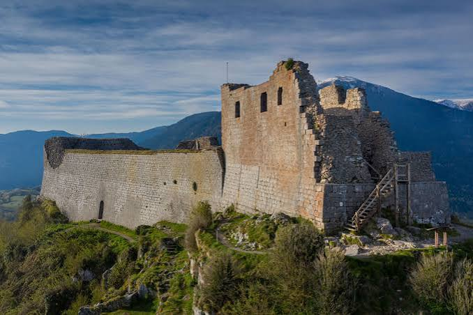
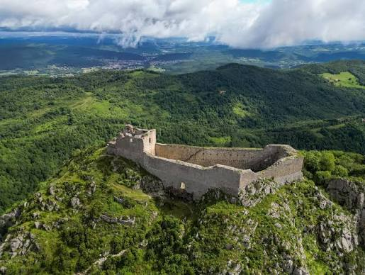

Château de
Montségur
En Ariège


⟹ Châteaux & Patrimoine cathare ⟸

Le pog, un site perché occupé depuis la Préhistoire. Le « pog » — un mot occitan (puòg, puèg) désignant un pic isolé en forme de pain de sucre — qui porte le château de Montségur domine à 1 207 mètres d'altitude le pays d'Olmes, dans les Pyrénées ariégeoises. Les traces d'occupation humaine sur cette montagne remontent à environ quatre mille ans avant notre ère, mais ce n'est qu'à la toute fin du XIIe siècle que le site est mentionné pour la première fois dans les textes sous le nom de castrum de Montségur.
1204 : Raymond de Péreille fortifie le pog. En 1204, Raymond de Péreille, seigneur du lieu, fait fortifier le sommet du pog. Selon la tradition rapportée par plusieurs historiens, cette reconstruction répondrait à une demande de l'Église cathare elle-même, en quête d'un refuge sûr face à la répression naissante — d'où le nom parfois donné au site, « mont sûr ».
Après la défaite de Muret (1213), le refuge de l'Église cathare. La déroute des armées occitanes et de leurs alliés aragonais à Muret en 1213 fragilise durablement la résistance méridionale. Guilhabert de Castres, évêque cathare de Toulouse, trouve alors refuge à Montségur, qui devient progressivement un centre de rassemblement pour les « bonshommes » — les parfaits cathares — fuyant une répression de plus en plus organisée.
1232 : Montségur devient le siège officiel de l'Église cathare. En 1232, le château accueille officiellement le siège de l'Église cathare et sert de refuge aux faidits, ces seigneurs occitans dépossédés de leurs terres par la croisade et la confiscation royale qui s'ensuit. Montségur devient ainsi, en une génération, la citadelle religieuse et politique de la dissidence occitane.
Quatre sièges en une génération (1212-1243). Avant la chute finale, Montségur subit pas moins de quatre tentatives de siège. Guy de Montfort mène un premier assaut en 1212, suivi en 1213 par son frère Simon de Montfort lui-même — tous deux sans succès. En juillet 1241, c'est au tour de Raymond VII de Toulouse, agissant sur ordre de Louis IX, d'investir le pog ; il lève le siège sans même livrer d'assaut. Il faut attendre mai 1243 pour que le siège décisif, mené par Hugues des Arcis, sénéchal de Carcassonne, aboutisse enfin à la reddition du château.
1242 : le massacre d'Avignonet précipite la fin. En mai 1242, des combattants réfugiés à Montségur, menés par Pierre-Roger de Mirepoix, participent au massacre des inquisiteurs d'Avignonet, épisode qui achève de convaincre le pouvoir royal et l'Église de la nécessité d'en finir avec ce foyer de résistance. Le siège final est décidé peu après.
Mai 1243 - mars 1244 : onze mois de siège. Hugues des Arcis rassemble une armée nombreuse — plusieurs milliers d'hommes selon les estimations — face à une garnison de quelques centaines de défenseurs seulement, dont une partie de non-combattants. Le siège s'éternise près d'onze mois, ralenti par l'inaccessibilité du site et la résistance opiniâtre des assiégés, jusqu'à ce que des montagnards de la région, ayant trahi leur camp, guident les assaillants vers un point faible permettant la prise de la barbacane avancée.
Décembre 1243 : la fuite du trésor et la légende. Aux alentours de Noël 1243, alors que le siège touche à sa fin, deux hommes — le parfait Mathieu et le diacre Bonnet — s'échappent du château à cheval en emportant, selon les chroniques de l'époque, de l'or, de l'argent et une quantité importante de monnaie. Cet épisode, resté longtemps mystérieux, est à l'origine de la légende tenace d'un « trésor cathare » caché quelque part dans le massif, un mythe qui perdure jusque dans l'imaginaire contemporain autour du Pays cathare.
16 mars 1244 : le bûcher de Montségur. Après onze mois de résistance, la garnison capitule. Ceux qui refusent d'abjurer leur foi — entre 205 et 225 « parfaits » selon les sources, un nombre le plus souvent arrondi à « plus de deux cents » — sont conduits au pied du pog et brûlés vifs dans un immense bûcher dressé dans un pré, le 16 mars 1244. Cet épisode reste, dans la mémoire collective, l'image la plus marquante de l'anéantissement du catharisme organisé en Languedoc, même si la dissidence clandestine se poursuivra encore, notamment autour des frères Authié, jusqu'au bûcher de Guilhem Bélibaste à Villerouge-Termenès en 1321.
1271 : le retour définitif de l'Occitanie à la Couronne. La chute de Montségur ne marque pas immédiatement la fin de toute résistance régionale, mais elle en sonne le glas symbolique. Il faut attendre 1271 et l'extinction de la dynastie comtale de Toulouse pour que l'ensemble du Languedoc revienne définitivement, et sans conteste, dans le giron de la Couronne de France.
Une forteresse presque entièrement reconstruite par les Capétiens. Ce que les visiteurs découvrent aujourd'hui n'est pas le château du siège de 1244. Les archéologues distinguent en effet un « Montségur II », la place cathare assiégée, presque entièrement rasée après sa capitulation, d'un « Montségur III », la forteresse royale reconstruite par la Couronne dans la seconde moitié du XIIIe siècle sur les mêmes fondations, afin de contrôler durablement cette position stratégique et d'affirmer l'autorité royale face au royaume d'Aragon voisin. Le donjon et la grande salle que l'on visite aujourd'hui appartiennent à cette troisième et dernière phase de construction.
Un phénomène architectural unique : l'orientation solsticiale. Chaque 21 juin, jour du solstice d'été, les premiers rayons du soleil levant traversent avec une précision remarquable les archères du donjon, illuminant les meurtrières opposées d'une lumière dorée qui semble un instant couper le château en deux. Ce phénomène, désormais bien documenté et observé chaque année par des passionnés, des astronomes amateurs et des pèlerins spirituels, témoigne d'une connaissance fine des cycles célestes de la part des bâtisseurs médiévaux — qu'il s'agisse d'un choix architectural délibéré ou d'une heureuse coïncidence continue de faire débat parmi les chercheurs.
1862 : l'un des tout premiers classements monuments historiques. Montségur figure parmi les tout premiers châteaux classés au titre des monuments historiques en France, dès 1862. Au pied du pog, le musée archéologique du village, labellisé Musée de France, présente les objets mis au jour lors des fouilles menées sur le castrum : boucles de ceinture, outils, pointes de flèches, mais aussi les sépultures émouvantes d'un homme et d'une femme morts durant le siège.
2026 : Grand Site de France et patrimoine mondial de l'UNESCO. Le 26 janvier 2026, Montségur obtient le label Grand Site de France, récompensant une gestion exemplaire de ce paysage devenu mythique. Six mois plus tard, le 26 juillet 2026, le château rejoint, aux côtés de Carcassonne, Aguilar, Lastours, Peyrepertuse, Puilaurens, Quéribus et Termes, la Liste du patrimoine mondial de l'UNESCO au sein du bien en série des « Forteresses royales capétiennes du Languedoc » — reconnaissance internationale pour un site qui demeure, dans l'imaginaire collectif, le symbole même de la résistance cathare.
Pour approfondir la lecture du monument, voici quelques repères historiques et architecturaux complémentaires.
Montségur II et Montségur III : les archéologues distinguent clairement les vestiges du castrum cathare, presque totalement détruit après 1244, de la forteresse royale qui lui succède et dont subsistent aujourd'hui le donjon et la grande salle visibles au sommet.
Le nombre exact des suppliciés : les sources médiévales et les travaux historiques modernes avancent des chiffres compris entre 205 et 225 personnes brûlées le 16 mars 1244 ; l'usage courant retient l'estimation ronde de « plus de deux cents » parfaits et parfaites.

Le mythe du trésor : la fuite de deux hommes emportant or et argent quelques semaines avant la reddition a nourri, depuis des siècles, des légendes sur un hypothétique trésor cathare enfoui dans le massif — un mythe qui reste, aujourd'hui encore, indissociable de la notoriété du site.
Documentation complémentaire
Source de référence : consulter la ressource officielle